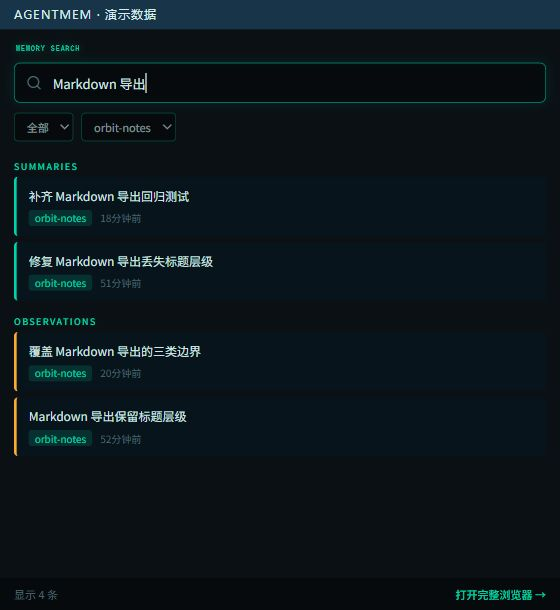
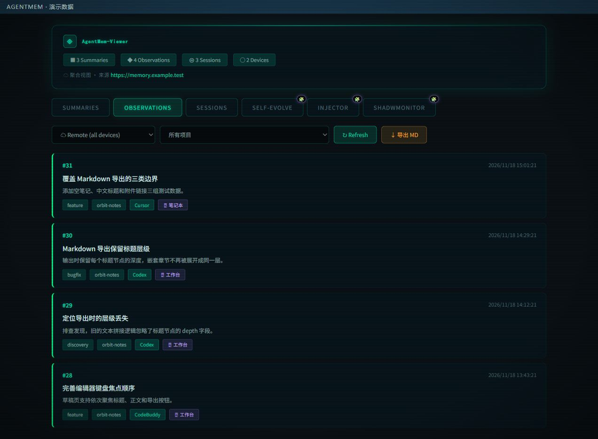
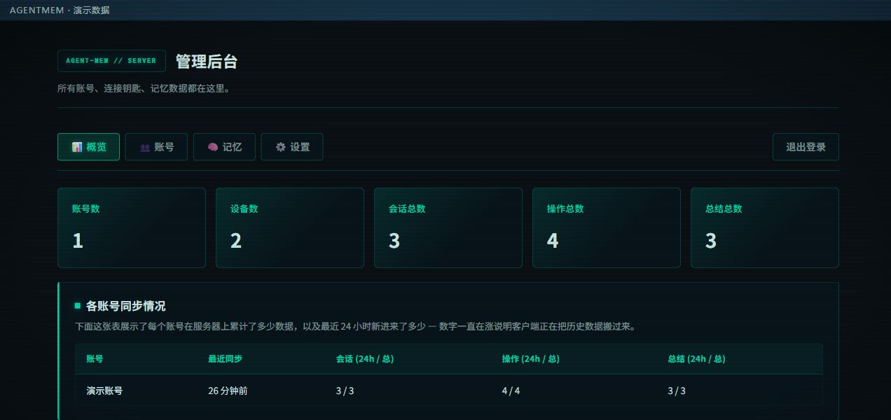
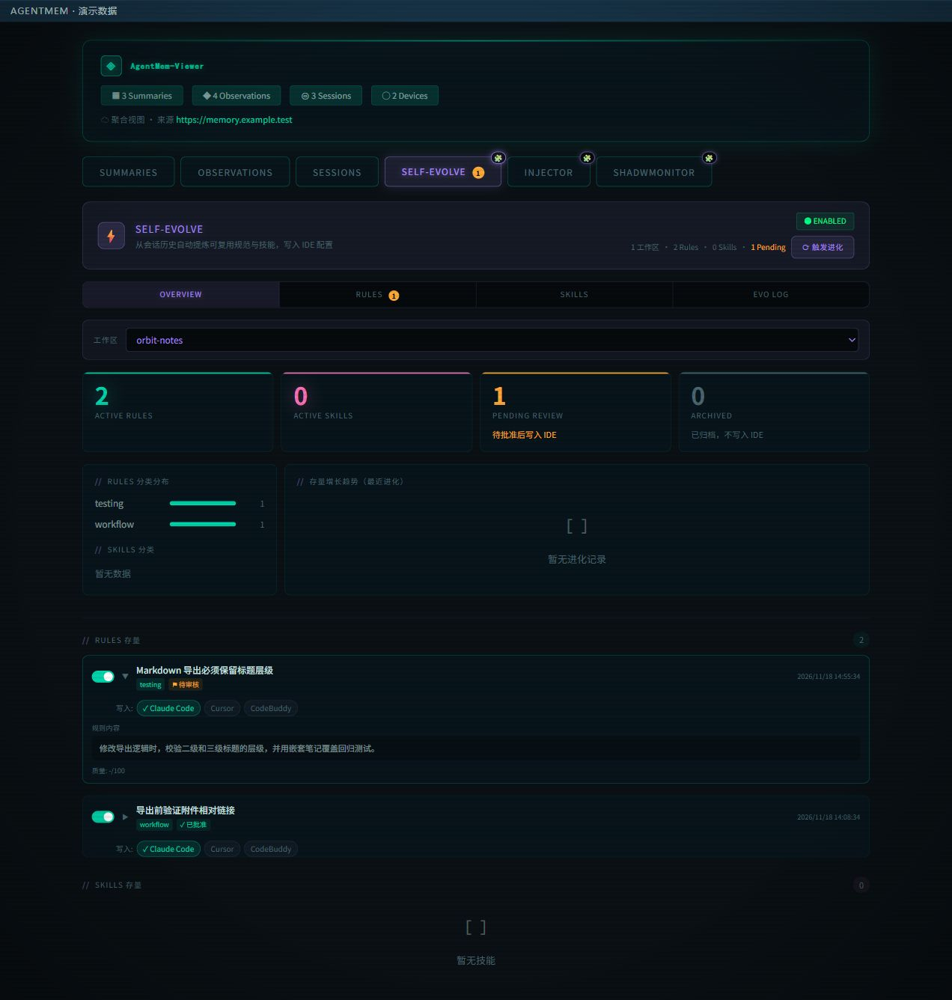
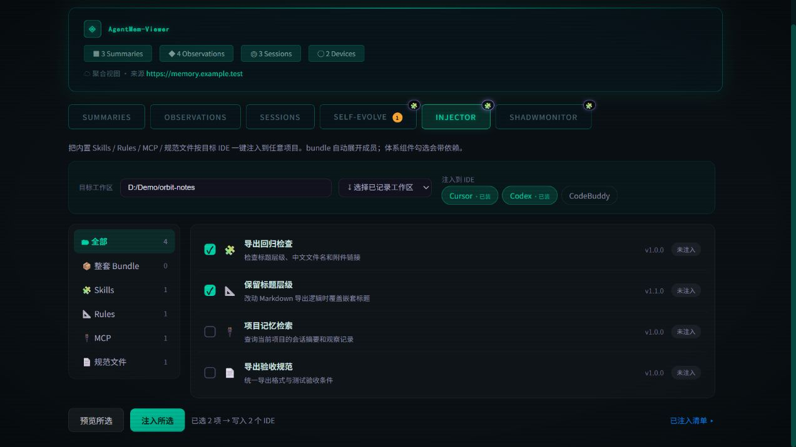
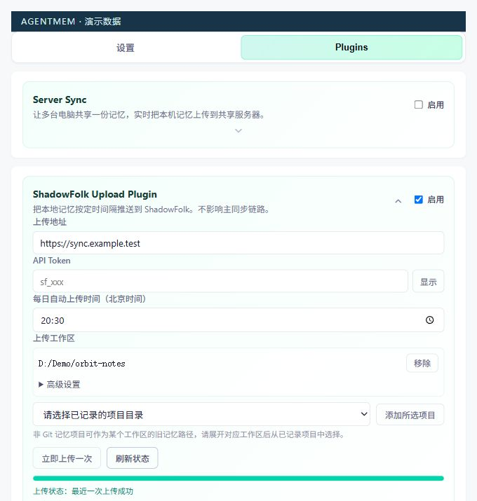

桌面客户端、聚合服务与插件 · 2026
AgentMem
AgentMem 是给 AI 编程会话用的项目记忆工具。它记录改动和任务进展，供人和接手的 Agent 检索。
昨天用 Codex 修了 Markdown 导出，今天换到 Cursor 补测试。搜一下就能查到上次改了什么、接下来该验证什么。
这是用演示数据运行的记忆浏览器。先看顶部标签和摘要列表，正文会沿着一次搜索走到原始观察记录。
 放大查看 ↗
放大查看 ↗先找回上次做到哪一步
快捷搜索用文本匹配。在演示库查 Markdown 导出，先限定项目再选记录。摘要适合看上次做到哪，观察记录能帮你核对具体改动。
- 搜索「Markdown 导出」
- 选 orbit-notes 项目
- 打开摘要或观察记录
Agent 也能通过 MCP 搜索历史，先看命中的索引和前后记录，再按编号读取详情。主动检索还可将 SQLite 全文搜索与向量检索的排名合并。启用了上下文注入的客户端，可以在会话开始或提交消息时带入近期的项目记忆。

放大查看 ↗会话怎样变成可检索记录
操作记录和会话摘要怎样关联
AgentMem 按项目保存会话中的操作和总结。摘要用来快速了解任务进展。点进观察记录可以辨认哪条是定位原因、哪条是修改标题层级、哪条是补测试。接手 Markdown 导出时，先用摘要找方向，再用观察记录核对具体发生了什么。
接入工具后，客户端按各平台提供的方式记录会话和操作。例如 CodeBuddy 和 Cursor 的 Hook 可以捕获工具调用与文件编辑，再将记录写入本机 SQLite。图中的演示项目在两台设备之间接续，摘要卡上的标签标记了项目、编程工具和设备。浏览器把记录分成会话、观察记录和摘要。摘要用来看任务结果和接下来的工作，观察记录用来追查具体的改动。

放大查看 ↗跨设备查看，也能带走一份 Markdown
单机使用时，在浏览器选择 Local 就能查看本机记录。两台设备各自连接同一聚合服务后，Remote 视图把同步过来的记录放在一起，并保留设备来源。服务端概览能看到账号、设备和各类记录的同步情况。
需要交接或留档时，可以在记忆浏览器按项目筛选，再点「导出 MD」保存 Markdown。实时同步适合继续查找新增记忆，导出的文件适合发给没有接入 AgentMem 的人。

放大查看 ↗ShadwMonitor 补上编辑器之外的上下文
有些工作发生在终端或浏览器，例如运行回归测试、打开导出页面检查附件。启用 ShadwMonitor 后，它通过截图、OCR 和摘要整理桌面活动。再开启桥接，短时活动摘要就能进入 AgentMem 的记忆检索；原始截图由插件本地保存。
 放大查看 ↗
放大查看 ↗复用规则与连接其他工具
Self-Evolve 把经验变成待审阅的规则
「上次修复时保留了标题层级」是一条历史记录。「每次改导出都要测二级和三级标题」才是今后能重复使用的规则。Self-Evolve 可以从项目会话中提炼 Rules 和 Skills，并让人检查候选规则、批准或归档。图中的规则仍待审阅，批准后才进入对应工具的写入流程。

放大查看 ↗Injector 把选好的规范装进项目
当一个工作区在 Cursor 和 Codex 里都要执行同一套导出验收时，可以在 Injector 选目标工作区、目标工具和要部署的内容。它支持 Skills、Rules、MCP、规范文件和成套 Bundle。预览可以先看将写入哪些位置，写入后可在已注入清单核对。

放大查看 ↗工作区记录怎样送到 ShadowFolk
如果某个工作区还要把记忆交给 ShadowFolk 处理，可以单独指定上传的工作区和每日时间，也可以手动上传一次。它从本地读观察记录和会话摘要，按自己的计划发送，和 AgentMem 的跨设备同步各自运行。

放大查看 ↗